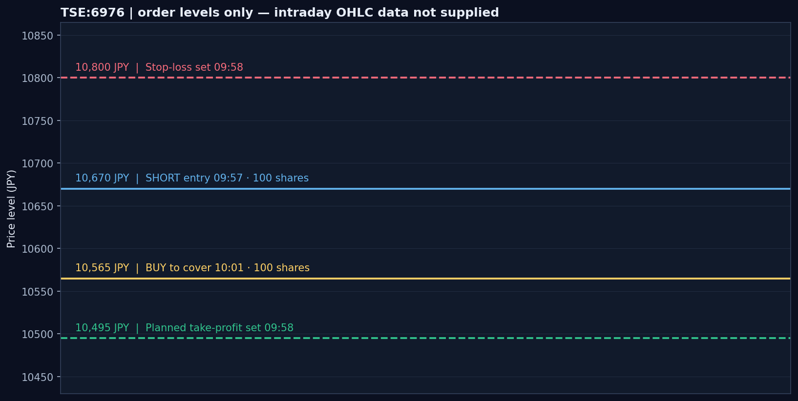
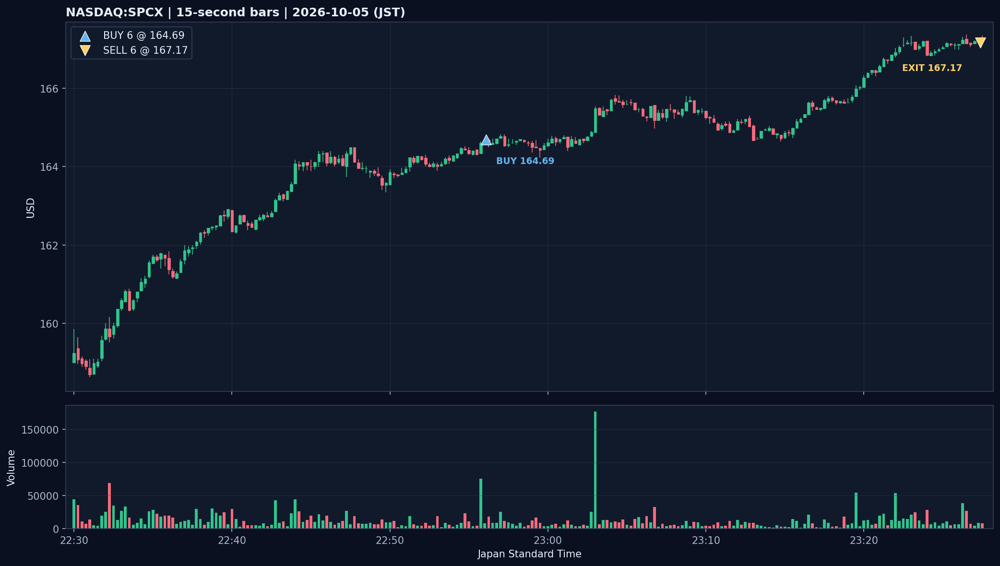
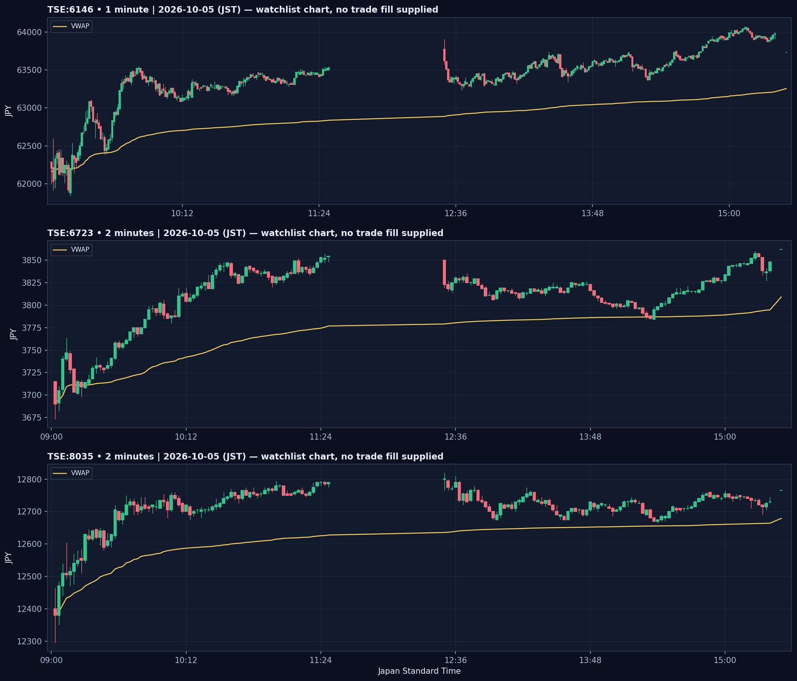
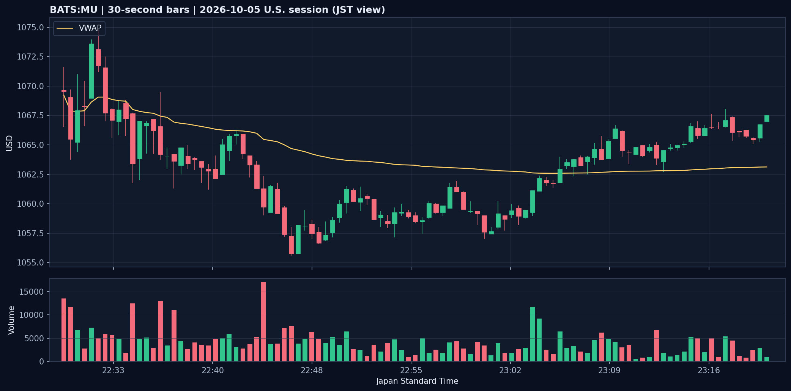

TRADE DAILY｜2026年10月5日（月）
紙上取引日誌｜日本株・米国株
注文・アクティビティ・残高履歴およびアップロードされたチャートCSVを照合。記載した取引はTradingView Paper Tradingのシミュレーションです。
本日の実現損益：＋12,853.6855円（約＋12,854円）
決済2件。残高履歴を損益の基準にしました。手数料欄は空欄のため、別途推計していません。
決済2件。残高履歴を損益の基準にしました。手数料欄は空欄のため、別途推計していません。
決済サマリー
| 銘柄 | 方向・数量 | ENTRY → EXIT | 保有時間 | 実現損益 |
|---|---|---|---|---|
| 太陽誘電（TSE:6976） | SHORT・100株 | 10,670円 → 10,565円 | 4分07秒 | ＋10,500円 |
| NASDAQ:SPCX | LONG・6株 | $164.69 → $167.17 | 31分17秒 | ＋2,353.6855円 （$14.88相当） |
| 合計 | ＋12,853.6855円 | |||
SPCXの円換算には残高履歴の158.177792円/USDを使用。両銘柄とも4倍レバレッジ表示でした。
約定の時系列
| 時刻（JST） | 銘柄 | 注文・ポジション | 記録 |
|---|---|---|---|
| 09:57:38 | 6976 | SHORT 100株 | 成行売り 10,670円。 |
| 09:58:32 | 6976 | 利確注文 | 10,495円の指値買いを設定。 |
| 09:58:36 | 6976 | 損切り注文 | 10,800円の逆指値買いを設定。 |
| 10:01:45 | 6976 | SHORT決済 | 成行買い 10,565円。＋10,500円。利確・損切り注文は同時刻にキャンセル。 |
| 22:56:05 | SPCX | LONG 6株 | 成行買い $164.69。 |
| 23:27:22 | SPCX | LONG決済 | 成行売り $167.17。＋2,353.6855円。 |
太陽誘電（6976）｜SHORT
- 10,670円で100株売り、10,565円で買い戻し。価格差105円 × 100株で＋10,500円。
- 設定した損切りは10,800円（想定損失幅130円・13,000円）、利確目標は10,495円（目標利益幅175円・17,500円）。設定時のリスクリワードは約1.35。
- 実際の決済は利確目標より70円上でした。決済理由はログにありません。
- 同日の相場メモは10,500円付近の支持・Wボトム・VWAP上を根拠に短期買い目線。一方、09:57の約定はSHORTです。メモの観察時刻やショート根拠を特定するチャートがないため、整合性は要確認です。

NASDAQ:SPCX｜LONG
- 22:56:05に6株を$164.69で買い、23:27:22に$167.17で売却。保有31分17秒。
- 値幅$2.48、+$14.88。残高履歴の為替換算で＋2,353.6855円。
- 15秒足データの当日範囲は$158.62〜$167.38。CSV最終足の終値は$167.22。
- 注文・アクティビティ記録にエントリー理由はありません。値動きの後付けだけで根拠を推測しません。

監視銘柄チャート｜約定記録なし
添付されたチャートCSVの当日値をJSTに変換しました。始値欄は当日最初に記録された足、終値欄はCSV最終足です。公式始値・終値とは限りません。
| 銘柄・足 | 最初の足 | 安値 | 高値 | 最終足 | 最終足VWAP |
|---|---|---|---|---|---|
| 6146・1分 | 09:03 62,290円 | 61,840円 09:13 | 64,080円 15:08 | 15:30 63,730円 | 63,253.85円 |
| 6723・2分 | 09:02 3,715円 | 3,673円 09:02 | 3,862円 15:30 | 15:30 3,862円 | 3,809.03円 |
| 8035・2分 | 09:02 12,400円 | 12,295円 09:02 | 12,820円 12:30 | 15:30 12,765円 | 12,679.01円 |
3銘柄ともCSV最終足はVWAPより上です。これらの注文・約定は提供されていません。

BATS:MU（Micron）・30秒足
添付範囲は22:30〜23:21 JST。最初の足$1,069.68、安値$1,055.58（22:46）、高値$1,074.85（22:32）、最終足$1,067.51。最終足時のVWAPは$1,063.12です。MUの注文・約定はなく、CSVは23:21で終わります。

照合結果と振り返り
- 注文履歴とアクティビティは6976の売り10,670円／買い10,565円、SPCXの買い$164.69／売り$167.17で一致。残高履歴の2件を合算すると＋12,853.6855円。
- SPCXの15秒足は高値$167.38・最終足$167.22ですが、添付された1日足CSV2本は10/5の高値・終値がそれぞれ$161.71と$165.83／$165.74で食い違います。1日足は約定検証に使わず、注文・残高履歴と15秒足を参照しました。
- 6976はSHORTの価格根拠と10,565円で決済した理由を残したい取引です。10,495円の利確目標を変更・取消した経緯はログだけでは分かりません。
- SPCXは約定結果は照合できましたが、エントリー理由・損切り位置は記録されていません。次回は注文前にこの2点も記録します。
6976の値動きやSPCXの個別シグナルを確認できる追加チャート・実況ログは今回の添付にありません。推測で補わず未確認として記録しました。
関連：10月5日の銘柄別相場メモ ／ Markdown日誌